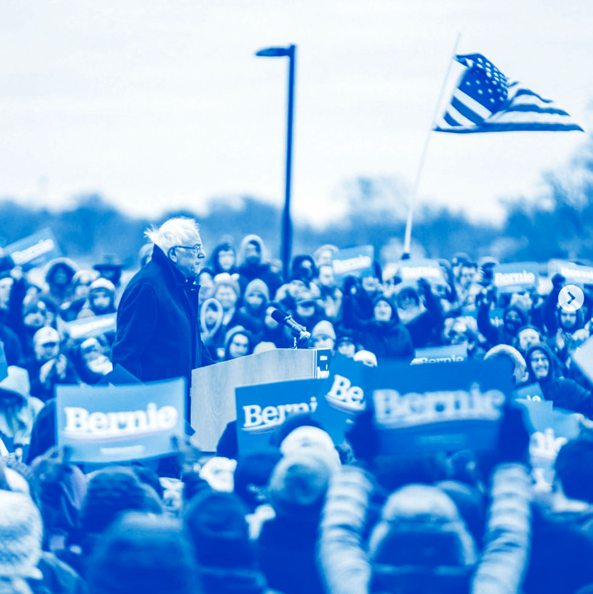
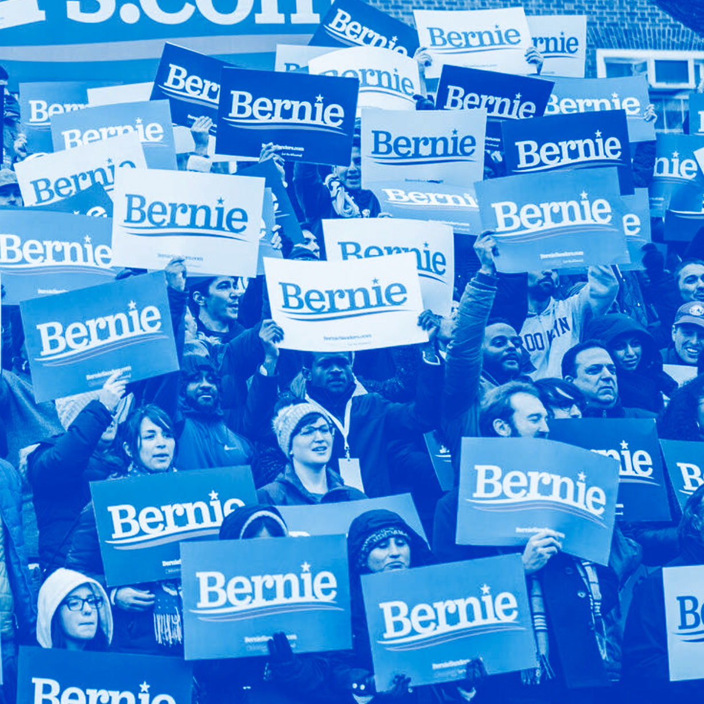

Design kit

Not him. Us.
we love bernie and want to help support him so we made this website about his design toolkit. feel the bern my frenz.
bernie is supported by viewers like you, donate to his campaign here
Logos
Fonts
Used for “Bernie” section of the Bernie 2016 logo and headlines. Privately licensed font, available from Darden Studio here.
Freight Sans
Available through Adobe Typekit.
Freight Sans Book
Used for general body copy
Freight Sans Bold
Used to highly key words and/or phrases
Freight Sans Bold SC
Used for “2016” section of the Bernie 2016 logo (only numeric characters used)
Freight Sans Medium
Used in ALL CAPS with a kerning of 75 for the display of the website URL, BernieSanders.com
Colors
Primary
color props
Secondary
color props
Accent
color props
color props